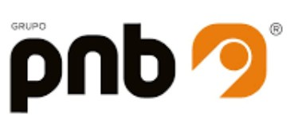
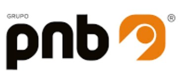
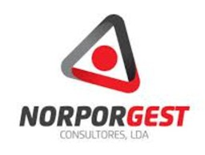
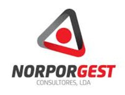

Langlobal
Excellence en Services Linguistiques
Excellence en Services Linguistiques
Langlobal, fondée en 2017, propose des services de traduction et de révision dans un large éventail linguistique, reflétant les compétences linguistiques variées de l'équipe de travail.
Nous sommes une équipe dotée de diverses compétences communicatives. Par conséquent, nous proposons des services de traduction et de révision dans différentes combinaisons linguistiques, nos membres étant des locuteurs natifs de portugais, d'ukrainien et de russe, et maîtrisant l'anglais et le français.
Nous fournissons des services de révision des aspects linguistiques dans différents types de textes, y compris les textes académiques.
Notre équipe de professionnels est spécialisée dans divers domaines, tels que :
Nous sommes une entreprise composée de traducteurs expérimentés, avec différents domaines de spécialisation et un large éventail de langues de travail.
Diplômé en Langues Appliquées de l'Université du Minho, il a débuté sa carrière de traduction et de révision en 2018, utilisant ses compétences natives en ukrainien et en russe, ainsi que sa maîtrise du portugais et de l'anglais. Il présente donc un portefeuille de traduction varié, notamment dans les domaines des technologies de l'information et de la technologie.
Diplômé en Langues Appliquées et titulaire d'un Master en Langue, Littérature et Culture Anglaises de l'Université du Minho, il est traducteur et réviseur depuis 2019. Il se spécialise dans la traduction EN-PT dans les domaines des sciences humaines et du marketing, ainsi que la localisation.
Diplômé en Langues Appliquées et titulaire d'un Master en Traduction et Communication Multilingue de l'Université du Minho, il propose des services de traduction EN-PT et de révision depuis 2016, avec une expérience particulière dans les domaines des sciences sociales et du tourisme.
Diplômé en Langues Appliquées et Affaires Internationales de l'Université du Minho, il combine des connaissances économiques avec une expérience dans le monde de la traduction et de la révision EN-PT et FR-PT depuis 2018, afin de créer un vaste portefeuille dans les domaines du droit, de l'économie et des finances.
Notre mission est de fournir la meilleure qualité de traduction et de révision linguistique, en visant à satisfaire tous les besoins de nos clients. Nous ne nous reposerons pas tant que nous n'aurons pas obtenu le meilleur résultat.
Basés sur l'excellence et le professionnalisme, nous réalisons chaque travail avec rigueur, efficacité, en respectant strictement le délai défini avec le client, tout en respectant sa confidentialité.
Nous réalisons tout notre travail en prêtant attention à la rigueur, à la fiabilité et à la cohérence, tout en respectant la confidentialité du consommateur.
Des petites entreprises aux grands groupes, nos clients, issus d'industries et de secteurs variés, font confiance à notre capacité à fournir des traductions efficaces et précises.


 



 


Si vous souhaitez utiliser nos services ou les connaître plus en détail, demandez un devis gratuit par e-mail : info@langlobal.com
Nous serons ravis de répondre à votre demande et de vous proposer un service de haute qualité.